利用 curl 或 wget 替代 DrClient 客户端
先说结论，通过抓包、分析、简化后可以发现，登录过程中的关键一步就是向服务
器发送一个 HTTP GET 或 HTTP POST 请求。路由器在启动之后只要能自动发送一
个 HTTP 请求，即可实现自动登录。
对于
GET请求（网页认证过程）# 请求地址为: http://172.30.255.42:801/eportal/portal/login/ # 请求查询的key=value为: # user_account=$校园卡号 # user_password=$密码 # curl curl -G \ -d 'user_account=$校园卡号' \ -d 'user_password=$密码' \ http://172.30.255.42:801/eportal/portal/login/ # wget wget --output-document=/dev/null \ "http://172.30.255.42:801/eportal/portal/login/?user_account=$校园卡号&user_password=$密码"
对于
POST请求（客户端认证过程）# 请求地址为: http://172.30.255.42:801/eportal/ # 请求的参数为: # DDDDD=$校园卡号 # upass=$密码 # ver=1.3.5.201712141.P.W.A # c=ACSetting # a=Login # curl curl -X POST \ -d 'DDDDD=$校园卡号' \ -d 'upass=$密码' \ -d 'ver=1.3.5.201712141.P.W.A' \ -d 'c=ACSetting' \ -d 'a=Login' \ http://172.30.255.42:801/eportal/ # wget wget --output-document=/dev/null \ --post-data='DDDDD=$校园卡号&upass=$密码&ver=1.3.5.201712141.P.W.A&c=ACSetting&a=Login' \ http://172.30.255.42:801/eportal/
请将上面的 $校园卡号 和 $密码 替换成你自己的账号、密码。
1. 前言
在2021年12月31日以前，深大在宿舍区使用的是D版客户端，想在路由器上实现 自动登录，可以参考下面这个教程:
宽带升级之后，认证客户端已经变为Pt版，过去的方式已经不再可用。本文将 通过抓包，分析认证的全过程，获取实现路由器自动认证的方案。
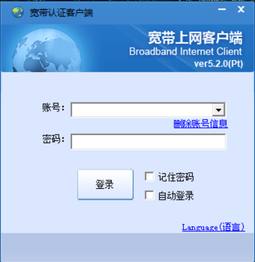
Figure 1: Pt版宽带上网客户端界面
- 本文仅是提供一个在路由器上实现自动认证，免去手动登录的方法，不含有 任何破解校园网的内容，请合理使用。
- 使用的路由器必须已刷入支持 Linux 命令及脚本的固件，比如OpenWRT。
- 本文所提供的代码及命令不保证在校园网下次升级后还能使用。但抓包分析登 录过程适用于大部分认证情况，根据自己抓包分析的结果，适当修改代码即可 实现在路由器上自动认证。
2. 准备工作
需要一台已刷好固件（比如 openwrt）的路由器，且开放 Telnet 或 SSH 服 务。
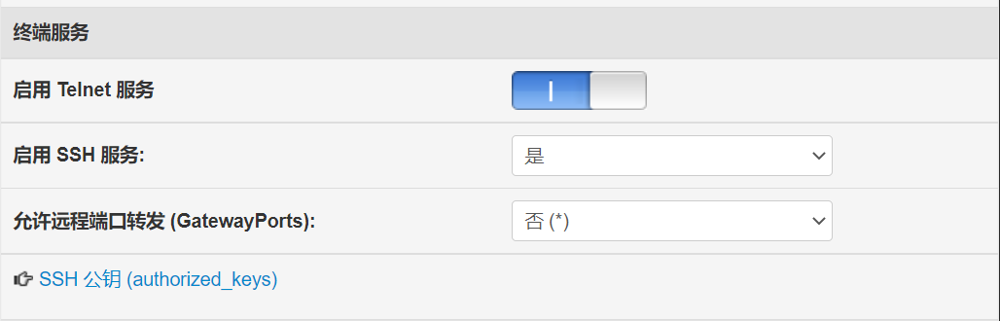
Figure 2: Padavan固件，开启Telnet和SSH服务
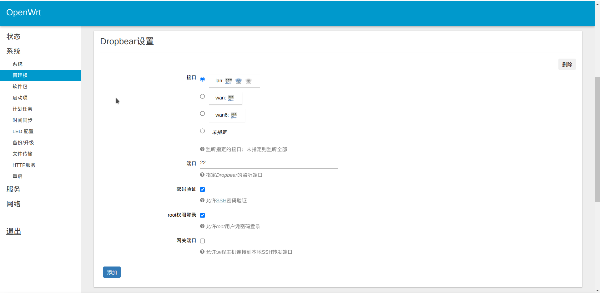
Figure 3: openwrt固件，开启SSH服务
准备一个抓包工具和带有 Chrome Dev Tools 的浏览器（进行抓包分析认证 过程）。本文使用
Wireshark进行客户端登录抓包分析。本文使用 Chrome 分析网页端登录的过程。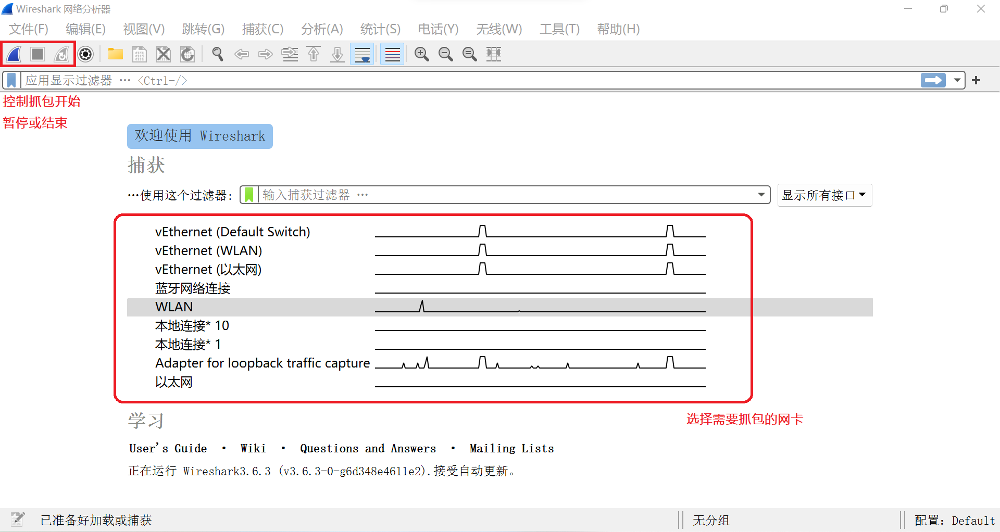
Figure 4: Wireshark的使用方法
- 用
ssh命令登录到路由器后台，用scp命令上传文件到路由器，从而对路 由器进行管理，无需准备其它软件。 - 测试路由器是否支持
curl命令或wget命令。ssh登录路由器后，输入curl或wget命令，如果显示 not found，则表示不支持。
3. 抓包分析
本节将通过对登录过程的分析，一步一步得到最后的 Linux 命令。
3.1. Wireshark
3.1.1. 抓包
先运行 Wireshark 开始抓包，然后再登录客户端认证，得到抓包结果。下图为此 次抓包所得结果，这里面包含了登录认证的全过程。
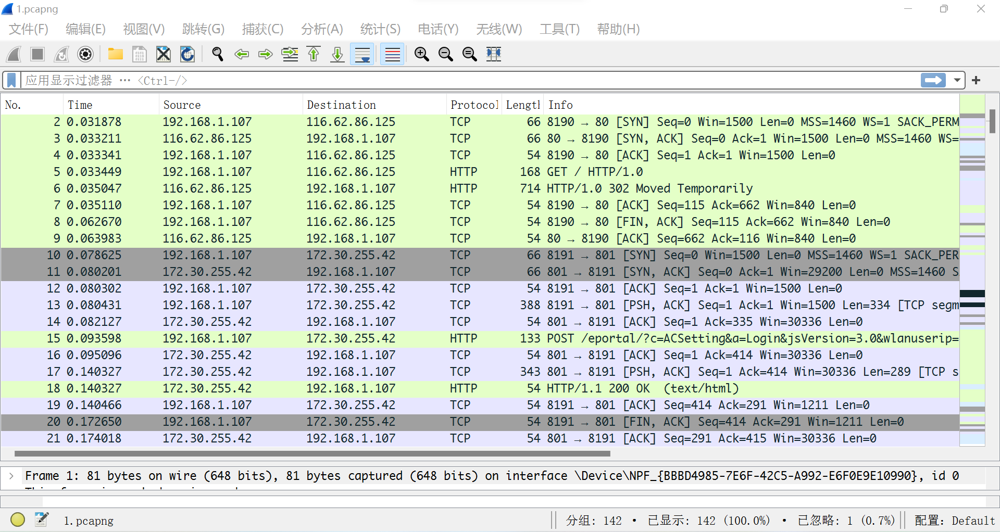
3.1.2. 分析
- TCP连接的建立与拆除
本机（192.168.1.107）与服务器（116.62.86.125）之间的通信过程。 首先看第2–9号包：
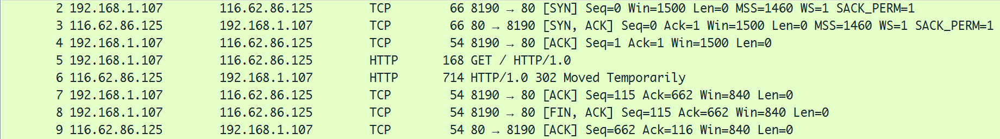
- 前三个包（2–4）是典型的TCP三次握手建立连接的过程。在
Info 中可以看到
[SYN], [SYN, ACK], [ACK]. - 第5号包，我们向服务器发送了一个
GET请求 - 第6号包，服务器回应了我们一个
302, 即重定向。 - 第7号包，我们向服务器发送
[ACK], 确认收到了数据。 - 第8–9号包，是四次挥手断开连接的过程（四次挥手的标识位
[FIN, ACK] [ACK] [FIN, ACK] [ACK], 但这里的四次挥手过程被合并成了 三次）。
- 前三个包（2–4）是典型的TCP三次握手建立连接的过程。在
Info 中可以看到
- HTTP数据的详细分析
我们来分析一下HTTP的请求头与响应头，直接看Wireshark的应用层:
先看请求头（点开5号包，展开 Hypertext Transfer Protocol）
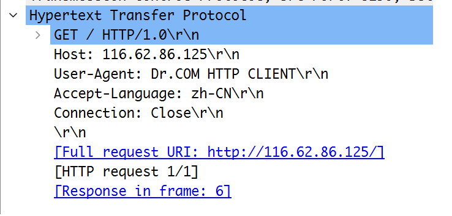
- 从图中可以看到，我们向服务器 116.62.86.125 发送了
GET请求。 User-Agent: 服务器通过UA能识别客户使用的操作系统及版本及浏览器信息 等，从而来给不同的操作系统、不同的浏览器发送不同的页面。此处用于标 识请求是由认证客户端所发出，但在后续进行模拟请求过程中，发现有无UA 并不影响最终登录结果，故我们忽略 UA。
- 从图中可以看到，我们向服务器 116.62.86.125 发送了
我们再来看响应头(点开6号包，展开 Hypertext Transfer Protocol）
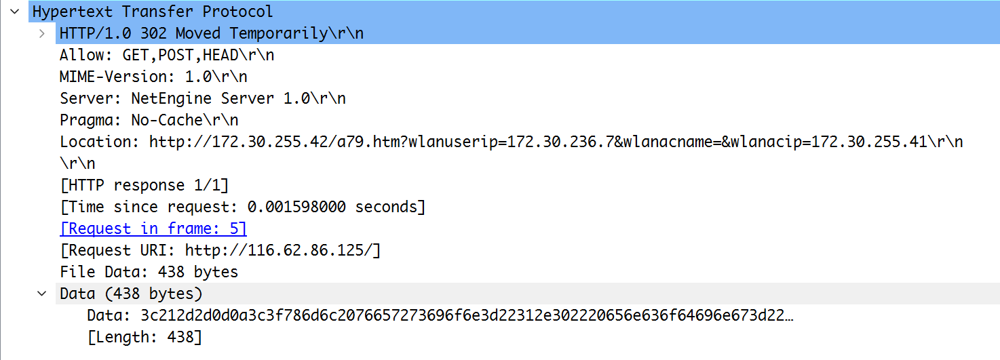
从图中我们可以看到，这个响应头的响应码为
302, 代表重定向，而 重定向的地址由后面的Location给出，即:这个url显示了目标IP信息，而对后续的包分析可知，这个ip信息将被用来组装 最终的认证url。
分析完与 116.62.86.125 的通信过程之后，来看第10–21号包中本机与 172.30.255.42 的通信过程。
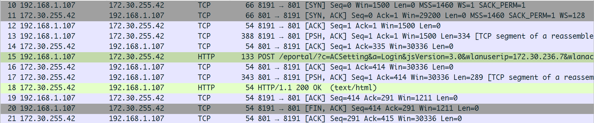
- 第10–12号包，与 172.30.255.42 进行了三次握手，建立连接。
- 第13号包带有标识位
[PSH], 表示我方有数据向服务器进行传输，随后服务器(第14号包)应答[ACK]. - 第15号，我们向服务器提交了一个 POST 请求。并由16,17号包可以看出， 服务器在收到我们的 POST 之后也返回了数据给我们，即 POST 的响应（17 号包由服务器发给我们中也含有标识位[PSH]）。
- 第18号包即是我们所得到的响应。
- 随后四次挥手断开连接。
- 我们依旧比较关心请求头和响应头。所以我们先来看第 18 号包的响应头。它
传输了数据过来，我们先看看数据是什么。
点开第 18 号包，展开
Hypertext Transfer Protocol, 展开Line-based text data: text/html, 里面的内容仅展示一句Login succeed。由此，可 以推断该响应头对应的请求是实现认证登录的最核心部分。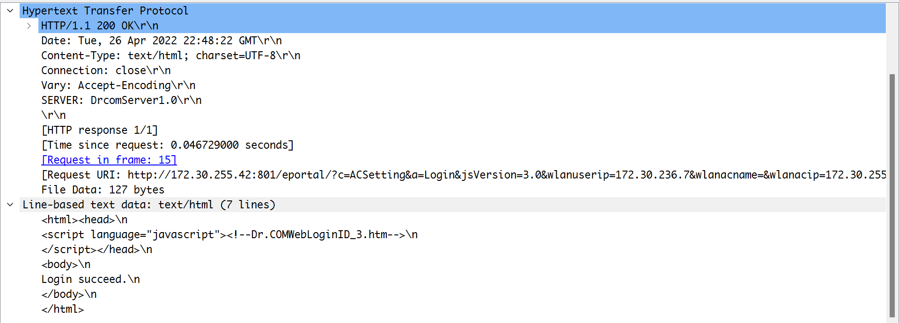
我们对请求头进行分析，点开第 16 个包，展开
Hypertext Transfer Protocol。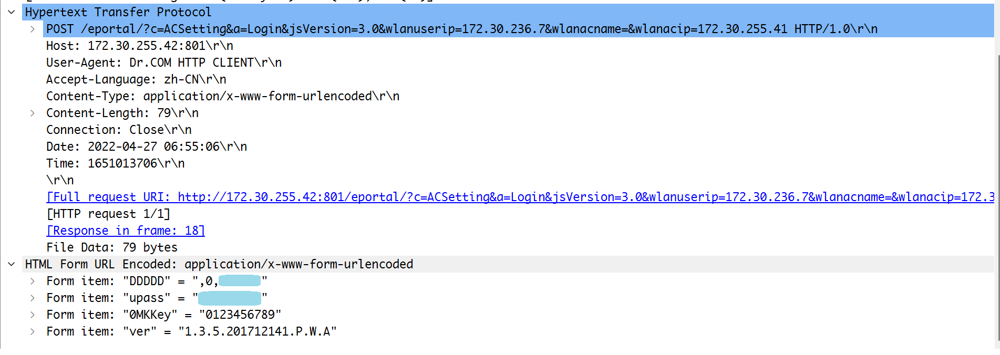
我们可以看到这是对
http://172.30.255.42:801/eportal/?c=ACSetting&a=Login&jsVersion=3.0&wlanuserip=172.30.236.7&wlanacname=&wlanacip=172.30.255.41
这个网址发送了 POST 请求。
可以推断地址后面的
wlanuserip=172.30.236.7&wlanacname=&wlanacip=172.30.255.41
是由重定向地址进行截取之后获取的。(这个过程是写在客户端里面的，我 们没有办法知道其具体细节，如果客户端更新之后改变了这部分逻辑，所得 结果有变化，那我们的命令也需要有所变化)。
并且提交了由
application/x-www-form-urlencoded编码的参数，而请求 的参数为:DDDDD=,0,$账号 upass=$密码 0MKKey=0123456789 ver=1.3.5.201712141.P.W.A
- 至此我们已经将认证登录的过程全部分析完毕，最后可以得出登录过程是一条含有账号密码等参数的
POST请求。
- 模拟请求
当我们分析出结果之后，我们要做的就是使用 Linux 命令进行模拟登录。此处 使用
curl命令。curl命令参数复杂，功能丰富，基本上能实现所有网络请求。 这里先简单介绍一下curl命令的发送GET和POST请求的一种方法。# curl发送 HTTP GET 请求 curl -G -d 'key=value' url # curl加入 -G 参数之后就能发送GET请求, # 并且 -d 参数能够实现插入查询键值对。 # curl发送HTTP POST 请求 curl -X POST -d 'key=value' url # curl命令默认发送POST请求 # 也可以通过指定-X 参数, 并指定POST方式, 实现发送POST请求 # 并且与GET一样, -d可以传递POST表单, # 默认编码为 application/x-www-form-urlencoded. # 使用命令获取重定向的网址: curl -G -Ls -w %{url_effective} -o /dev/null website # -L 参数指定 curl 跟随重定向, # -s 指定 curl 保持沉默, 不进行输出, # -w %{url_effective}表示获取重定向最终的地址, # -o /dev/null 指定结果不写入文件中. # website 表示要访问的网站 # 执行完这条语句其输出就是我们需要的重定向之后的链接
那么我们使用变量url储存重定向链接的命令为
url=`curl -G -Ls -w %{url_effective} -o /dev/null 116.62.86.125`
拆分变量并进行重组url
我们需要发送POST指令的网址为:
http://172.30.255.42:801/eportal/?c=ACSetting&a=Login&jsVersion=3.0&wlanuserip=172.30.236.7&wlanacname=&wlanacip=172.30.255.41
可以发现后边带有ip的是重定向之后的链接里的查询参数部分，我们在问号处 进行截取，然后拼接字符串，即认证网址的前半部分。 命令为(问号需要进行 转义):
url=${url##*\?} url="http://172.30.255.42:801/eportal/?c=ACSetting&a=Login&jsVersion=3.0&"${url}
发送
POST请求由之前的分析，我们可以直接写出命令：
curl -X POST \ -d 'DDDDD=,0,$校园卡号' \ -d 'upass=$密码' \ -d '0MKKey=0123456789' \ -d 'ver=1.3.5.201712141.P.W.A' ${url}
可以看到最后
curl命令的输出为HTML, 且仅显示Login succeed. 与我们之前抓包的结果相同，认证登录成功。#全部过程 url=`curl -G -Ls -w %{url_effective} -o /dev/null 116.62.86.125` url=${url##*\?} url="http://172.30.255.42:801/eportal/?c=ACSetting&a=Login&jsVersion=3.0&"${url} curl -X POST \ -d 'DDDDD=,0,校园卡号' \ -d 'upass=密码' \ -d '0MKKey=0123456789' \ -d 'ver=1.3.5.201712141.P.W.A' ${url}
- 简化命令
经过多次登录，我们会发现登录主要是依靠最后一个POST命令，虽然其携带了后面一串ip地址，但我们尝试将其去除之后，会发现其实一样也能认证成功。故其实POST中的参数并不是所有都是需要的，我们进行一一检验，将查询字符串的参数(?之后的)，放到post表单中，最后可以得出一条简化的命令，即开头的结论:
curl -X POST \ -d 'DDDDD=$校园卡号' \ -d 'upass=$密码' \ -d 'ver=1.3.5.201712141.P.W.A' \ -d 'c=ACSetting' \ -d 'a=Login' \ http://172.30.255.42:801/eportal/
{kind=link}
{kind=link}
{kind=link}